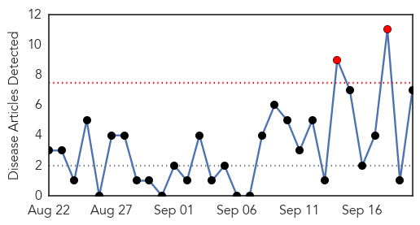
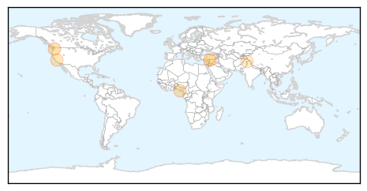
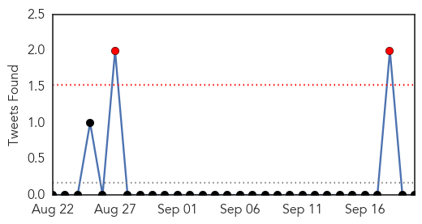

Measles
30-Day Web Trend
2 alerts, 0 warnings

30-Day Twitter Trend
0 alerts, 0 warnings

Article Locations
Article Confidences
Top Articles:
- 0.985
- 2 children in state confirmed with rare enterovirus
- 0.974
- The Pacific - Humanitarian Snapshot (as of 19 September 2014) - Vanuatu
- 0.853
- Bayelsa Denies Outbreak Of Polio, Measles
- 0.825
- Parents Choosing Not to Vaccinate out of Fear of Vaccine Injuries
- 0.716
- Measles Vaccine Kills Dozens In Syria
- 0.662
- Health services limping back to normal in Kashmir
- 0.564
- Syrian children die in measles vaccination mishap
Top Tweets:
-
No tweets found for Sep 20, 2014
Influenza
30-Day Web Trend
7 alerts, 0 warnings

30-Day Twitter Trend
0 alerts, 0 warnings

Article Locations

Article Confidences

Top Articles:
- 0.982
- Advisory to Mecca travellers -- NationNews Barbados -- Local, Regional and International News nationnews.com
- 0.972
- CDC, Erie County health commissioner remind families not to forget flu vaccine
- 0.959
- CDC tells healthy adults, kids to get flu vaccine
- 0.959
- Influenza vaccinations urged for young, middle-aged adults
- 0.869
- CDC: 90 percent of children who died from flu last year had not been vaccinated
- 0.697
- Is preservative in vaccines worth the risk?
Top Tweets:
-
No tweets found for Sep 20, 2014